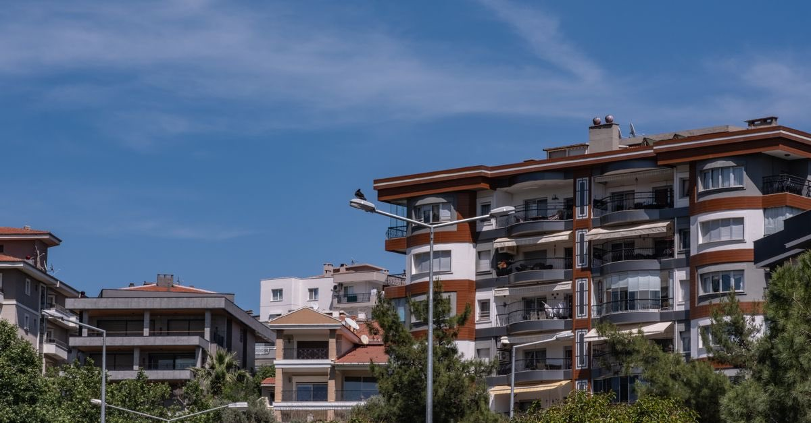

DASK ve sigorta
DASK'ım yoksa ne olur? Asıl kayıp ceza değil, devlet desteğini kaybetmektir
Zorunlu deprem sigortası bulunmayanlara devlet konut yardımı veya kredi ödenmediği belirtilmektedir. DASK'ın asıl karşılığı budur.
· ~4 dakika okuma · T8 Hasar Tespiti · Claude Impact Lab

"DASK primi ne kadar? Ödemesem ne olur?" sorusunun standart cevabı yanlış yerden başlar. Doğru cevap ceza değil, şudur:
Zorunlu deprem sigortası bulunmayanlara Devlet konut yardımı veya kredi ödemez. Yani binanız yıkılırsa devletten afet konutu veya faizsiz kredi alamayabilirsiniz.
DASK'ın asıl karşılığı bir yaptırımdan kaçınmak değil, afet sonrası devlet desteğine erişim hakkını korumaktır. Yıllık prim ile kaybedilebilecek destek arasındaki oran, bu kararı kolay hâle getirir.
Kimler için zorunlu?
- Kat Mülkiyeti Kanunu kapsamındaki bağımsız bölümler
- Tapuya kayıtlı ve özel mülkiyete tabi taşınmazlar üzerinde mesken olarak inşa edilmiş binalar
- Bu binaların içindeki ticarethane, büro ve benzeri amaçlarla kullanılan bağımsız bölümler
- Doğal afetler nedeniyle Devlet tarafından verilen veya sağlanan kredi ile yapılan meskenler
Poliçe nerede kontrol ediliyor?
Kapsamdaki bina ve bağımsız bölümlere ilişkin su ve elektrik abonelik işlemlerinde zorunlu deprem sigortasının varlığı ilgili kurumca kontrol edilir. Tapu işlemlerinde de aranır.
Yani poliçesizlik çoğu zaman bir gün bir işlem sırasında karşınıza çıkar — ama en kötü ihtimalle depremden sonra çıkar.
Poliçesiz kalınca tam olarak ne kaybediliyor?
| Konu | DASK var | DASK yok |
|---|---|---|
| Bina hasarı tazminatı | Azami teminata kadar ödenir | Ödenmez |
| Devlet konut yardımı / faizsiz kredi | Hak sahipliği şartlarına göre değerlendirilir | Sigortası bulunmayanlara ödenmediği belirtilmektedir |
| Abonelik ve tapu işlemleri | Sorunsuz | Poliçe istenir |
| Eşya, enkaz, kira, can kaybı | Her iki hâlde de DASK kapsamı dışındadır | |
Son satır önemlidir: DASK yaptırmak, eşyanızı veya canınızı sigortalamaz. DASK neleri karşılamaz?
"Poliçem var" demek yetmeyebilir
Poliçenin varlığı kadar geçerliliği de önemlidir:
- Yenileme yapılmadıysa teminat yoktur. DASK poliçeleri yıllıktır.
- Metrekare veya yapı tarzı yanlışsa sigorta bedeli düşük hesaplanır; ödeme de düşük olur.
- Bina genel şartlardaki kapsam dışı hâllere giriyorsa (tamamı ticari kullanım, projesiz/mühendislik hizmeti görmemiş yapı, taşıyıcı sistemi tadil edilmiş bina, metruk yapı) tartışma çıkabilir.
Poliçenizin ne kadarını gerçekten karşıladığını DASK yeterli mi? yazısındaki hesapla görebilirsiniz.
Kiracıysanız: yaptıramazsınız ama korumasız kalmak zorunda değilsiniz
DASK poliçesi binaya ve malike bağlıdır; kiracı DASK yaptıramaz, tazminat da kiracıya ödenmez. Buna karşılık kiracı kendi eşyası için konut/eşya sigortası yaptırabilir.
Malik binayı sigortalar, siz eşyanızı sigortalarsınız. DASK'ınız yok çünkü olamaz — ama sigortasız olmak zorunda değilsiniz. Kiracının deprem hakları.
Bugün yapılacaklar
- Poliçenizin olup olmadığını ve süresini kontrol edin; poliçe numarasını bir yere kaydedin.
- Metrekare ve yapı tarzı bilgisinin doğruluğunu teyit edin.
- Poliçeniz yoksa, sigorta şirketiniz veya yetkili acente üzerinden yaptırın.
- Eşya, enkaz kaldırma ve alternatif konaklama için ihtiyari konut sigortasını değerlendirin.
- Binanızın gerçekten riskli olup olmadığını öğrenmek için risk tespiti hakkınızı hatırlayın — tek malik olarak da başvurabilirsiniz.
Prim neye göre belirleniyor?
Zorunlu deprem sigortasında prim, keyfî bir fiyatlandırma değildir; resmî tarifeye göre hesaplanır. Belirleyici unsurlar şunlardır:
- Binanın bulunduğu deprem risk bölgesi
- Yapı tarzı — çelik/betonarme karkas veya diğer
- Brüt yüzölçümü
- Binanın inşa yılı ve kat sayısı gibi risk unsurları
Poliçeyi hangi şirketten aldığınız primi değiştirmez; tarife aynıdır. Bu yüzden "daha ucuza yapan" arayışı yerine, poliçedeki bilgilerin doğruluğuna odaklanın — yanlış metrekare veya yapı tarzı, hasar anında ödemeyi düşürür.
"Nasıl olsa devlet yapar" itirazı
Bu, en pahalıya mal olan varsayımdır. Devletin afet konutu ve kredi desteği hak sahipliğine bağlıdır; hak sahipliği ise mülkiyet ilişkisi, kesinleşmiş hasar derecesi ve süresinde yapılmış başvuru gerektirir. Üstüne, zorunlu deprem sigortası bulunmayanlara konut yardımı veya kredi ödenmediği belirtilmektedir. Yani "devlet yapar" beklentisinin ilk şartı, çoğu zaman poliçenin kendisidir.
Hak sahipliği sürecinin nasıl işlediğini bu yazıda adım adım bulabilirsiniz.
Poliçe nasıl yaptırılır?
- Belgeleri hazırlayın. Tapu bilgisi (ada, parsel, bağımsız bölüm), kimlik numarası, binanın yapım yılı, brüt yüzölçümü, yapı tarzı ve kat sayısı.
- Sigorta şirketine veya yetkili acenteye başvurun. Poliçe DASK adına düzenlenir; şirket yalnızca aracıdır.
- Bilgileri kontrol ederek imzalayın. Metrekare ve yapı tarzı doğru mu? Bu iki alan, ödenecek tazminatı doğrudan belirler.
- Yenileme tarihini takviminize yazın. Poliçe yıllıktır; yenilenmezse teminat sona erer.
Kiracıysanız poliçeyi malikin yaptırması gerekir; siz kendi eşyanız için ayrı bir poliçe yaptırabilirsiniz. Kiraya verene poliçenin bir örneğini sormanız da makul bir taleptir: binanın sigortalı olup olmadığı, hasar sonrasında sizi de doğrudan ilgilendirir.
Poliçenizin olup olmadığını ve geçerlilik tarihini öğrenmek için sigorta şirketinizle iletişime geçebilir, sonrasında sigorta açığı aracıyla teminatınızın gerçekte ne kadarını karşıladığını hesaplayabilirsiniz.
Sık sorulan sorular
DASK yaptırmazsam para cezası öder miyim?
Asıl yaptırım para cezası değildir. Zorunlu deprem sigortası bulunmayanlara Devletin konut yardımı veya kredi ödemediği belirtilmektedir; yani poliçesizlik, afet sonrası devlet desteğine erişimi kaybettirir.
DASK hangi binalar için zorunlu?
Kat Mülkiyeti Kanunu kapsamındaki bağımsız bölümler, tapuya kayıtlı ve özel mülkiyete tabi taşınmazlar üzerinde mesken olarak inşa edilmiş binalar, bu binalar içindeki ticarethane ve büro gibi bağımsız bölümler ile devlet kredisiyle yapılan meskenler kapsamdadır.
Poliçem yoksa elektrik ve su aboneliği yapabilir miyim?
Kapsamdaki bina ve bağımsız bölümlerde su ve elektrik abonelik işlemlerinde zorunlu deprem sigortasının varlığı ilgili kurumca kontrol edilir. Tapu işlemlerinde de aranır.
Kiracı DASK yaptırabilir mi?
Hayır, poliçe binaya ve malike bağlıdır; tazminat malike ödenir. Kiracı kendi eşyası için ihtiyari konut/eşya sigortası yaptırabilir.
Hangi kanuna dayanıyor?
Bu yazıdaki bilgilerin dayandığı düzenlemeler:
- 6305 sayılı Afet Sigortaları Kanunu m.10 — kapsamdaki binalar
- 6305 sayılı Afet Sigortaları Kanunu m.11 — abonelik ve tapu işlemlerinde kontrol
- 7269 sayılı Kanun m.29/8 — sigortası bulunmayanlara konut yardımı yapılmaması
- Sigorta açığı hesabı — poliçe yaptırmadan önce neyin kapsandığını görün
- Haklarım — malik veya kiracı olarak haklarınızı listeleyin